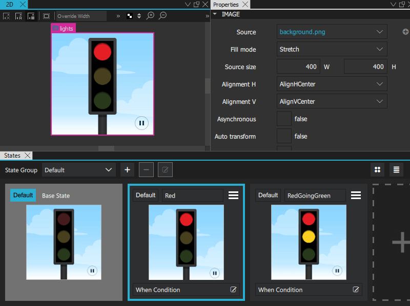
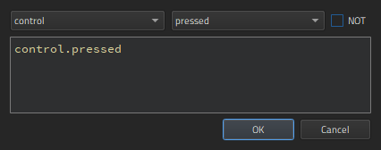
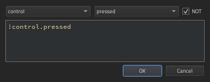
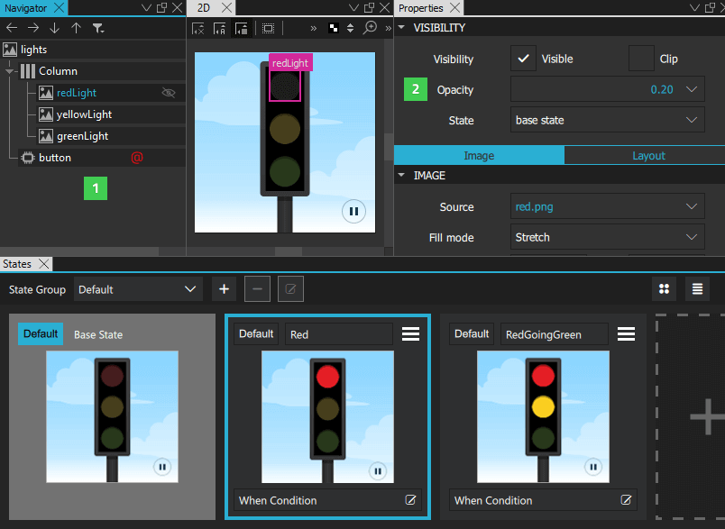
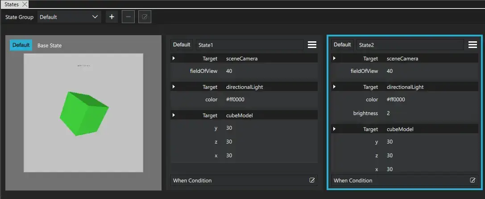
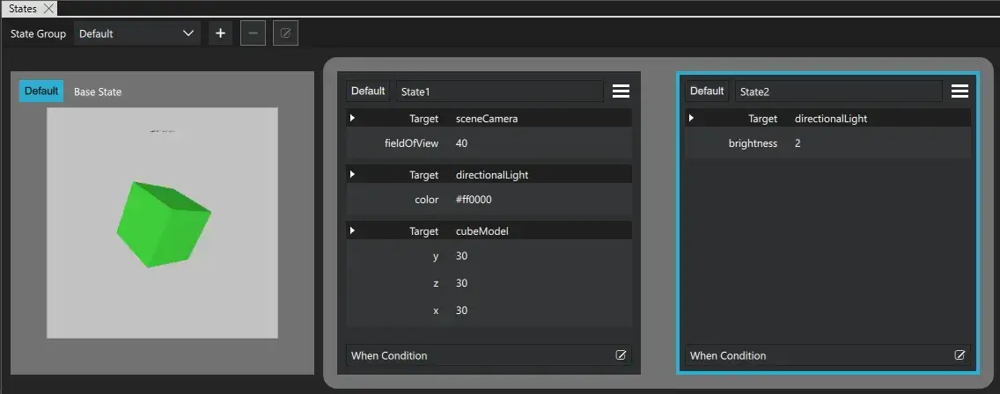

Working with States
You can define states for components and component instances in the States view by selecting  .
.

Click the new state to switch to it in the 2D and 3D views, and then modify the values of the properties of components or component instances in Properties.
For example, to change the appearance of a button, you can define states in the button component to hide the button image and show another image in its place or to change the button background or text color. When you use instances of the button in other components, you can define states to create different screens by hiding or showing button component instances. The preset Button control in Components > Qt Quick Controls > Controls has predefined normal and down states.
This also applies to the custom button component that you can create by using a wizard template. For more information about editing the states within the button component and hiding and showing buttons to create several screens, see Log In UI - Components and Log In UI - States.
To add motion to a screen, you can change the position of a component instance in the 2D view and then add animation to the change between the states.
The properties that you change in a state are highlighted with blue color. In the Code view, you can see the changes recorded as changes to the base state.

Note: If you have locked a component in Navigator, and you attempt to remove states where you change the values of its properties, you are prompted to confirm the removal.
For more information, watch the following video:

Setting the Default State
The default state determines the startup state of the application.
To set a state to the default state, select Default.
Applying States
To determine when a state is applied, select  in the When Condition field. In Binding Editor, specify a when property for the state. Set the value of the property to a boolean expression that evaluates to
in the When Condition field. In Binding Editor, specify a when property for the state. Set the value of the property to a boolean expression that evaluates to true when you want the state to be applied.
This enables you to evaluate the truthfulness of several components' properties and move the UI to the state in which these conditions apply. You can evaluate whether something is true or false, greater than or equal to something else, and so on. You can also use operators, such as AND or OR, to evaluate the truthfulness of several components.
The when conditions are evaluated from left to right and in order of appearance in the code. Therefore, if you have two conditions for two different states that both evaluate to true, the first state is applied.
In Binding Editor, select the component and property to create the expression. For example, to change the state when a button is pressed, you could select a button component and its pressed property.

When you compose the expressions in Binding Editor, the code completion feature lists the components and their properties you can use in the expressions.
Summary of Logical Operators
You can use the following logical operators in the expressions to combine several conditions in one expression:
| Operator | Meaning | Evaluates to true if |
|---|---|---|
| ! | NOT | The condition is not met. |
| && | AND | Both conditions are met. |
| || | OR | Either of the conditions is met. |
| < | Less than | The left operand is less than the right operand. |
| > | Greater than | The left operand is greater than the right operand. |
| >= | Greater than or equal | The left operand is greater than or equal to the right operand. |
| <= | Less than or equal | The left operand is less than or equal to the right operand. |
| == | Equal | The operands are equal. |
| === | Strict equal | The operands are equal and of the same type. |
| != | Not equal | The operands are not equal. |
| !== | Strict not equal | The operands are of the same type but not equal, or are of different type. |
Alternatively, you can use And Operator, Or Operator, and Not Operator components to bind property values using the boolean AND, OR, and NOT operator. For more information, see Logic Helpers.
In addition, you can use arithmetic operators to compare numbers before checks. However, we recommend that you create separate properties for this purpose whenever possible.
Examples of when Conditions
To apply a state to a button when the button is pressed, you could simply write:
when: control.pressed
To apply a state when the button is not pressed, select the NOT check box.

To apply a state when the button is not pressed, selected, nor hovered on, you could combine conditions, as follows:
when: !control.pressed && !control.checked && !control.hovered
To apply a state when the button is pressed or selected, but not hovered on, you could write:
when: control.pressed || control.checked && !control.hovered
If you are not familiar with writing expressions, you can use preset logic helpers from Components > Qt Quick Studio Logic Helper.
Using States
To keep the code clean, you should create a base state that contains all the components you will need in the application. You can then create states, in which you hide and show a set of components and modify their properties. This allows you to:
- Align components on different views with each other.
- Avoid excessive property changes. If a component is invisible in the base state, you must define all changes to its child components as property changes, which leads to complicated code.
- Minimize the differences between the base state and the other states to keep the code short and readable and to improve performance.
- Avoid problems when using transitions and animation when changing states.
To create views for an application by using states:

- In the base state, add all components you will need in the application (1). While you work on one view, you can click the icon in Navigator to hide components on the canvas that are not part of a view.
- In States, select the + symbol to create a new state and give it a name. For example,
Normal. - In Properties (2), deselect the Visibility check box or set Opacity to 0 for each component that is not needed in this view. If you specify the setting for the parent component, all child components inherit it and are also hidden.
- Create additional states for each view and set the visibility or opacity of the components in the view.
- To determine which state is applied when the application starts, select Default.
State Groups
With state groups, you can change the state of certain components independently of other components and their states in the same view.
Each state group has its own property changes and transitions.
By default, there is one default state group.
Extending States
When a state extends another state, it inherits all the changes of that state. The state being extended is treated as the base state in regards to the changes specified by the extending state.
Using extended states can make the user interface and your QML code cleaner.
Below is an example where the only change between State1 and State2 is the brightness of directionalLight.
Here, extended states are not used:

Here, State2 is extended from State1:
